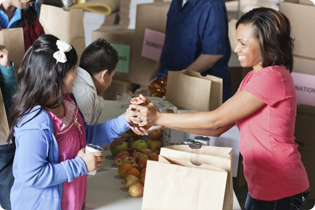
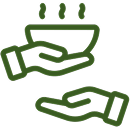

FoodReach connects people facing food insecurity with nearby food pantries, community organizations, and charity. We believe everyone deserves access to nourishing food with dignity.

Discover food pantries, and community resources near you.
Create or contribute to requests from people who need a helping hand

Help support trusted organizations working to end hunger.